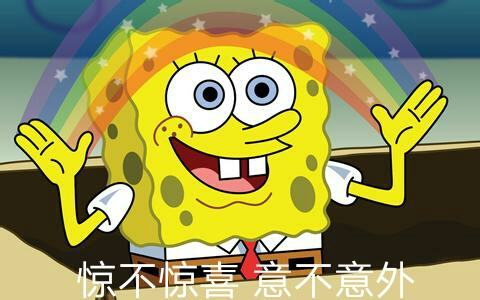

SpongeBob is a square yellow sponge. He lives in a pineapple on bikini beach. His pet is a sea snail with the ability of "cat cat ~". SpongeBob likes to catch jellyfish and is the number one chef in the Krusty Krab.He has two left hands with four fingers in each. Brown Shorts, white shirt and red tie are the main clothing. Having an immortal body, even if the body is destroyed, it can be restored to its original state. Although there is normal food intake, but pure filtered seawater can continue to survive. Physical weakness, and the so-called dumbbells are actually fluffy toys.
